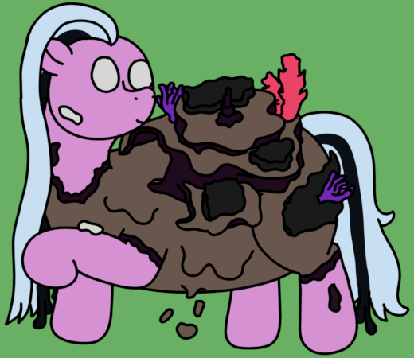

| Commonality | 8.8% (Gangrenous Archons) |
| Durability | 10/10 |
| Strength | Physical: 3/10 Psionic: 6/10 Magical: 0/10 |
| Specials | Spawns Aquarians, Inundators, and Planarans Self-grown ecosystem |
| Personality | Hungry and sessile |
Reefs fulfill the role of being a gangrenous counterpart to Reconcilants. Their spawning capabilities are less robust than Reconcilants, but their bodies act as living ecosystems, feeding and housing their subpuppets. They spawn Inundators, Aquarians, and Planara to form sections of their ecosystems, effectively making a singular Reef a communal organism in its own right.
Reconcilants - Reefs - Haulers
Reefs are very similar to Reconcilants in terms of having wider, more rotund builds, but where they distinguish themselves is their considerably increased height: A typical Reef stands at 6' 4" (193cm), thoroughly straddling the size gap between a typical heavy puppet and a superheavy. Their bodies appear much larger than their measurements would suggest, however, due to the large shells that grow up and out of their back. This shell is made of a hardened gangrenous skin that dessicates and decays into sandy soil, which covers much of the Reef's body. It is this sand that their ecosystems grow in, and many of their subpuppets rely on it for resting space. The sand also plays host to verdant grasses that grow out of the Reef, allowing them to feed their subpuppets.
While they are seldom born with the assorted corals and sponges that can be found among their bodies, Reefs will actively cultivate the ecosystems they carry with the aid of their puppets, and take great pride in what they manage to grow, similar to Leviathans.
Reefs follow the predictable pattern that many gangrenous puppets do, trading the strong psionic performance of a Reconcilant for even greater durability owed to their hard, gangrenous shells. Where Reconcilants act as a base for their subpuppets, typically providing protective cover, Reefs and their subpuppets act as one connected ecosystem. In particular, Inundators will arrange themselves in defensive batteries around the Reef's shell while Aquarians consume the grasses and soils found on the Reef's back to provide caloric energy to their siblings.
Combat is particularly draining to a Reef for this reason, and as such, they spend much of their time out of combat grazing and resting. While outwardly slothful, their bodies typically run at a higher metabolism than even some subpuppets, replenishing lost shell or soil mass and regrowing consumed grasses. They also show a preference for resting near Cambrians or Cornucopiae, benefitting from the verdant magics they emit and allowing them to replenish their lost body mass even faster.
It is not particularly common, but other puppets will eat the seagrasses that Reefs grow, particularly if the Reef is becoming overgrown and lacks the necessary subpuppets to maintain itself, or if the larger clan is struggling with a lack of caloric energy.
Reefs, of course, share many of the broad strokes of their epigenetic trigger makeup with Reconcilants. Despite the fact that they share the trait of carrying a gangrenous shell with Paladins, there appears to be minimal correlation between the two materials, with Paladin shells more closely resembling conventional mineralized mollusc shells, whereas Reef shells are formed entirely of dried and hardened skin. This does make Reefs overall less durable, but also means their shells are much easier to regrow when damaged.
Reefs are the first variant puppet to be added after an Archon has been made, replacing Reconcilants. They also are the new parents of Planara, replacing the contextual spawning from Reconcilants.
Reefs, of course, take heavy inspiration from ocean life, building off of the Planara's inspiration from flatworms. They were originally much more colourful, but this design was cycled out to better fit the looks of a Gangrenous Puppet. They twist the Reconcilant's gimmick a bit by focusing more on being a landmass that sustains their subpuppets rather than simply being a source and repair base.
